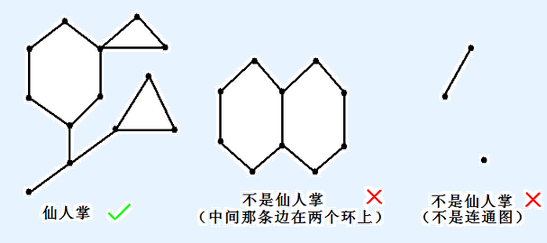

F.A.Qs
Home
Discuss
ProblemSet
Status
Ranklist
Contest
入门OJ
ModifyUser
Xeonacid
Logout
捐赠本站
Notice:
注册本OJ方式请见https://www.lydsy.com/JudgeOnline/wttl/thread.php?tid=5671
Problem 4252. -- mx的仙人掌
4252: mx的仙人掌
Time Limit:
50 Sec
Memory Limit:
512 MB
Submit:
26
Solved:
15
[
Submit
][
Status
][
Discuss
]
Description
如果一个无向连通图的任意一条边最多属于一个简单环，我们就称之为仙人掌。所谓简单环即不经过重复的结点的环。
什么是仙人掌

现给定一棵仙人掌，每条边有一个正整数权值，每次给 k 个点（可以存在相同点），问从它们中选出两个点（可以相同），它们之间最短路的最大值是多少。
Input
第一行两个非负整数 n,m，表示仙人掌的点数和边数。
接下来 m 行，每行三个正整数 v,u,w (1≤v,u≤n)，表示 v 与 u 之间有一条边权为 w 的无向边。点从 1 开始编号。
保证输入的图是一棵仙人掌，保证没有自环，但可能有重边。
接下来一行一个非负整数 Q，表示询问个数。
接下来 Q 行每行第一个数是正整数 cnt 表示点数，接下来 cnt 个数表示给定的点。
Output
对每个询问输出一个数，表示该询问对应的最大值。
Sample Input
10 14
10 7 1
3 8 7
1 6 9
7 2 10
8 9 9
1 7 1
8 5 2
4 5 4
1 7 4
2 9 8
9 3 3
8 4 2
1 6 5
7 9 10
6
2 9 5
2 8 10
3 8 7 6
2 6 4
3 3 4 2
1 10
Sample Output
11
20
25
27
19
0
HINT
前五个询问的答案路径分别为(如果有重边则显然走较短的边):
9→8→5
8→9→7→10
8→9→7→1→6
4→8→9→7→1→6
2→9→8→4
最后一个询问的答案显然是0。
边权不超过 2^31−1。
对于 100% 的数据，n,tot≤300000。
Source
By matthew99
[
Submit
][
Status
][
Discuss
]
HOME
Back